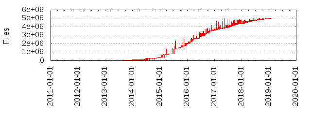

Files
- Total files
- 4501972
- Total lines
- 1192479127
- Average file size
- 25305.72 bytes
| Extension | Files (%) | Lines (%) | Lines/file |
|---|
| 23 (0.00%) | 337 (0.00%) | 14 |
| 0 | 1 (0.00%) | 0 (0.00%) | 0 |
| 1 | 1 (0.00%) | 0 (0.00%) | 0 |
| aac | 175 (0.00%) | 11333 (0.00%) | 64 |
| css | 174966 (3.89%) | 66395760 (5.57%) | 379 |
| cur | 397 (0.01%) | 0 (0.00%) | 0 |
| eot | 12224 (0.27%) | 3948705 (0.33%) | 323 |
| gif | 29516 (0.66%) | 1457437 (0.12%) | 49 |
| ico | 1 (0.00%) | 0 (0.00%) | 0 |
| jpg | 1360 (0.03%) | 426458 (0.04%) | 313 |
| js | 974614 (21.65%) | 1100321236 (92.27%) | 1128 |
| json | 10050 (0.22%) | 271288 (0.02%) | 26 |
| map | 105754 (2.35%) | 266185 (0.02%) | 2 |
| markdown | 1 (0.00%) | 4 (0.00%) | 4 |
| md | 8 (0.00%) | 707 (0.00%) | 88 |
| mp3 | 181 (0.00%) | 9239 (0.00%) | 51 |
| mp4 | 10 (0.00%) | 0 (0.00%) | 0 |
| ogg | 181 (0.00%) | 9243 (0.00%) | 51 |
| otf | 4902 (0.11%) | 2147152 (0.18%) | 438 |
| png | 2786589 (61.90%) | 81469499 (6.83%) | 29 |
| sig | 1 (0.00%) | 0 (0.00%) | 0 |
| svg | 367247 (8.16%) | 24360435 (2.04%) | 66 |
| svg alias | 3 (0.00%) | 9 (0.00%) | 3 |
| swf | 2801 (0.06%) | 544939 (0.05%) | 194 |
| template | 1 (0.00%) | 13 (0.00%) | 13 |
| ttf | 8277 (0.18%) | 6900660 (0.58%) | 833 |
| wav | 91 (0.00%) | 60250 (0.01%) | 662 |
| webp | 3984 (0.09%) | 7251 (0.00%) | 1 |
| woff | 13804 (0.31%) | 2157243 (0.18%) | 156 |
| woff2 | 4805 (0.11%) | 812378 (0.07%) | 169 |
| xap | 3 (0.00%) | 171 (0.00%) | 57 |
| yml | 1 (0.00%) | 9 (0.00%) | 9 |